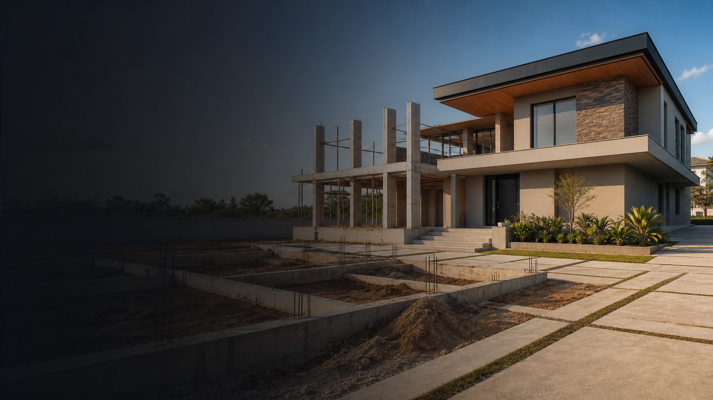

Terreno primeiro
A cena começa com o lote vazio ou com a base limpa onde o imóvel será construído.

Material da Aula
Guia prático para criar uma animação em que um imóvel surge aos poucos, começando pelo terreno vazio e evoluindo até a casa finalizada com fachada, pintura, iluminação e acabamento profissional.
01
O efeito de montagem gradual de imóvel mostra a construção acontecendo etapa por etapa. A cena pode começar em um terreno vazio e avançar por fundação, pilares, vigas, paredes, telhado, portas, janelas, revestimentos, pintura, paisagismo e iluminação final.
A cena começa com o lote vazio ou com a base limpa onde o imóvel será construído.
A fundação aparece no chão, marcando a planta e a área ocupada pela casa.
Pilares, vigas, lajes e paredes começam a formar o esqueleto arquitetônico.
Telhado, portas, janelas, pintura e revestimentos completam o visual externo.
O vídeo transmite evolução, valorização imobiliária e acabamento premium.
02
O fluxo do material combina criação de prompts, geração de frames, animação e edição final.
Para estruturar
Cria prompts detalhados, organiza a lógica da montagem e transforma cada etapa em comando claro.
Para gerar frames
Produz os frames progressivos: terreno vazio, fundação, estrutura, paredes, telhado e imóvel finalizado.
Para animar
Transforma os frames em vídeos curtos com sensação de surgimento, encaixe e construção.
Para finalizar
Une os vídeos, ajusta ritmo, cortes, transições, cor, trilha sonora e acabamento final.
03
O storyboard é a sequência de imagens que representa cada fase da construção. O ideal é trabalhar com intervalos de 5 a 6 segundos por etapa para que o público entenda a evolução do imóvel.
Apenas o cenário aparece: lote, rua, condomínio, área verde ou terreno base.
A base do imóvel surge no chão com concreto, marcações estruturais e delimitação da planta.
A estrutura principal aparece com pilares, vigas, lajes e sustentação da construção.
As paredes externas e internas definem o volume da casa e a distribuição dos cômodos.
Telhado, portas, janelas e elementos principais da fachada são adicionados.
A casa recebe pintura, textura, revestimentos e detalhes arquitetônicos externos.
Fachada pronta, iluminação, paisagismo, calçada, garagem e acabamento premium.
04
A lógica principal é criar frames incrementais. Cada etapa usa a imagem anterior como base para preservar câmera, ambiente e composição.
Use este comando antes de gerar os prompts técnicos em inglês.
Preciso criar uma série de imagens usando o Gemini/Nano Banana. O objetivo é criar uma montagem gradual de um imóvel, mostrando a construção surgindo passo a passo. Quero trabalhar com frames incrementais: primeiro o terreno vazio, depois a fundação, depois a estrutura, paredes, telhado, portas, janelas, acabamento e o imóvel finalizado. Preciso que os prompts mantenham a mesma câmera, mesma perspectiva, mesmo enquadramento, mesma iluminação e o mesmo ambiente em todos os frames. A imagem final deve parecer profissional, realista, arquitetônica e visualmente consistente. Crie prompts detalhados em inglês para cada etapa, com comandos claros para não alterar o cenário original nem modificar a composição.
05
Prompts em inglês para gerar cada imagem base no Gemini/Nano Banana.
Cria a base limpa da cena, removendo qualquer construção existente.
Edit the uploaded image only. Keep the camera fixed exactly as in the reference image. Do not change the perspective, angle, framing, zoom, crop, horizon line, background, lighting, shadows, street, sky, vegetation, sidewalk, or scene composition. Remove only the existing house or building from the image, leaving the terrain completely clean and natural. Fill the removed area realistically with the surrounding ground, grass, pavement, soil, or environment. The final image must look like the same exact location from the same exact camera position, but with the construction completely removed. No traces, debris, shadows, walls, roof, windows, doors, or marks from the original building should remain.
Adiciona a primeira etapa visível da construção.
Using the uploaded empty terrain image as the main reference, add only the foundation of a modern residential property in the correct location where the house will be built. Keep the camera, perspective, angle, framing, background, lighting, shadows, ground, sky, and environment exactly the same. The foundation should appear as a realistic concrete base with structural outlines, clean edges, and accurate proportions. It must be naturally integrated into the terrain, respecting the perspective and scale of the scene. Do not add walls, roof, windows, doors, furniture, people, vehicles, or landscaping yet. Only the foundation/base structure should be visible.
Mostra a estrutura inicial do imóvel.
Edit the uploaded image only. Keep the existing foundation exactly in place. Add the main structural skeleton of the house, including realistic concrete pillars, beams, and support elements. The structure must be aligned with the foundation and follow the same architectural footprint. Do not change the camera, perspective, framing, lighting, background, terrain, sky, or environment. Do not add exterior walls, roof, windows, doors, paint, decoration, furniture, people, vehicles, or landscaping yet. The result should show only the foundation plus the structural framework of the property, cleanly assembled and realistically integrated.
Forma o volume principal do imóvel.
Using the uploaded image as the main reference, keep the foundation, pillars, and beams exactly in place. Add the exterior and interior walls of the house, forming the main architectural volume. The walls should look realistic, unfinished, and under construction, with clean masonry or concrete surfaces. Maintain the exact same camera angle, perspective, framing, lighting, shadows, background, terrain, and environment. Do not add roof tiles, final paint, decorative facade elements, doors, windows, furniture, people, vehicles, or landscaping yet. The result should show the property taking shape, with walls clearly defining the rooms and exterior structure.
Deixa a casa reconhecível como imóvel quase finalizado.
Edit the uploaded image only. Keep the house walls, foundation, pillars, and structure exactly as they are. Add a realistic roof, front door, windows, window frames, and basic architectural openings. The roof and openings must match the perspective, scale, and architectural style of the house. Do not change the camera, background, lighting, shadows, terrain, sky, or scene composition. Do not add final paint, decorative facade cladding, landscaping, people, vehicles, or furniture yet. The result should look like a house in an advanced construction stage, with the main structure, roof, doors, and windows already installed.
Aplica o acabamento visual principal do imóvel.
Using the uploaded image as the main reference, keep the house structure, roof, doors, and windows exactly in place. Add the final exterior facade finish, including professional paint, clean wall texture, architectural cladding, modern trim details, realistic materials, and polished exterior surfaces. Maintain the exact same camera position, perspective, framing, background, lighting, shadows, terrain, sky, and environment. Do not add people, vehicles, furniture, or excessive decoration. The house should now look almost complete, with a clean, premium, realistic residential facade.
Entrega o frame final profissional.
Edit the uploaded image only. Keep the completed house exactly in the same position, with the same camera angle, perspective, framing, lighting, shadows, background, sky, and environment. Add the final real estate presentation details: clean landscaping, grass, small plants, sidewalk finishing, driveway, subtle exterior lights, polished entrance, and a premium residential look. The final image should look like a professional architectural real estate render blended into a realistic environment. Keep everything natural, elegant, high quality, and visually consistent. Do not add people, cars, signs, text, logos, or unrealistic elements. The property must look fully completed and ready for presentation.
06
Use sempre um frame inicial e um frame final. A IA deve animar a transição como um time-lapse realista de obra, com trabalhadores construindo cada etapa e câmera fixa em tripé.
{
"animation": {
"reference_images": {
"image_1": "target reference for the completed foundation layout, including the concrete base, stepped pathways, landscaping integration, and architectural footprint",
"image_2": "starting reference for the empty terrain, defining the original environment"
},
"start_frame": "empty_terrain",
"end_frame": "terrain_with_foundation",
"animation_type": "construction_timelapse_with_workers",
"camera": "static",
"description": "Create a realistic construction time-lapse scene showing the house foundation being built on the empty terrain. Use Image 1 as the target reference for the completed foundation layout and Image 2 as the starting reference for the empty terrain. Show workers, masons, and construction operators actively building the foundation in fast-motion time-lapse. The empty grassy terrain should gradually transform into a construction site, with workers marking the ground, preparing the area, carrying materials, using wheelbarrows, positioning forms, pouring concrete, leveling surfaces, and assembling the foundation step by step. The foundation must gradually take shape in the exact same position, scale, and layout seen in Image 1, while preserving the same camera angle, perspective, framing, horizon line, surrounding trees, sky, lighting, and environment from Image 2. The transformation should feel realistic and believable, driven by visible human work rather than magical appearance. Preserve the premium architectural style of Image 1, including the clean concrete slabs, stepped pathway alignment, landscaped edges, subtle lighting details, and elegant site organization. Add subtle time-lapse motion blur to the workers and active construction elements. The final result should look like the same location evolving from an empty grassy lot into a professionally built residential foundation stage, with cinematic realism, high detail, natural textures, and premium architectural presentation quality."
}
}
{
"animation": {
"start_frame": "terrain_with_foundation",
"end_frame": "foundation_with_pillars_and_beams",
"animation_type": "construction_timelapse_with_workers",
"camera": "locked_static_tripod",
"description": "Create a realistic construction time-lapse from a fixed tripod camera. Start with the completed foundation and show workers, masons, and construction operators assembling the structural skeleton of the house. Workers should move quickly across the site, carrying materials, positioning rebar, preparing concrete columns, installing formwork, using ladders, aligning beams, and working around the foundation. The concrete pillars, beams, and support elements should gradually rise and connect as a result of visible construction work. Include realistic temporary elements such as scaffolding, wooden supports, buckets, wheelbarrows, and construction tools, but keep them organized and believable. The movement should feel like a fast-motion real construction process, with subtle motion blur on workers and tools. By the end, the final frame must show the completed foundation with pillars and beams, matching the end reference frame. Keep the camera fully static, tripod-mounted, with no zoom, no pan, no tilt, and maintain the same lighting, perspective, shadows, background, and environment."
}
}
{
"animation": {
"start_frame": "foundation_with_pillars_and_beams",
"end_frame": "house_with_walls",
"animation_type": "construction_timelapse_with_workers",
"camera": "locked_static_tripod",
"description": "Create a realistic construction time-lapse from a fixed tripod camera. Start with the foundation, pillars, and beams already in place. Show masons and construction workers actively building the exterior and interior walls section by section. Workers should move quickly in time-lapse style, carrying bricks or blocks, applying mortar, aligning walls, using levels, moving wheelbarrows, handling buckets, and working from different positions around the structure. The walls should gradually rise from the foundation and connect naturally to the structural beams and pillars. Add realistic construction details such as temporary scaffolding, stacked blocks, cement bags, masonry tools, and unfinished surfaces. The scene should feel like a real house being built in fast motion, not a magical transformation. By the end, the final frame must show the house with completed unfinished walls, matching the end reference frame. Keep the camera completely static on a tripod and preserve the same perspective, framing, lighting, shadows, terrain, background, and environment."
}
}
{
"animation": {
"start_frame": "house_with_walls",
"end_frame": "house_with_roof_doors_and_windows",
"animation_type": "construction_timelapse_with_workers",
"camera": "locked_static_tripod",
"description": "Create a realistic construction time-lapse from a fixed tripod camera. Start with the house walls already built. Show construction workers, installers, and operators actively installing the roof structure, roof covering, front door, windows, window frames, and architectural openings. Workers should move quickly in time-lapse style, using ladders, scaffolding, lifting materials, positioning roof elements, carrying frames, placing doors, adjusting windows, and working around the facade. The roof should gradually assemble over the walls, while doors and windows are installed naturally by workers. Include realistic temporary construction elements such as scaffolding, ladders, toolboxes, protective materials, and stacked frames. The movement should feel like an accelerated construction day with visible human activity. By the end, the house must show the completed roof, doors, and windows, matching the end reference frame. Keep the camera locked in a static tripod position with no camera movement, and maintain the same perspective, lighting, shadows, background, and environment."
}
}
{
"animation": {
"start_frame": "house_with_roof_doors_and_windows",
"end_frame": "house_with_finished_facade",
"animation_type": "construction_timelapse_with_workers",
"camera": "locked_static_tripod",
"description": "Create a realistic construction time-lapse from a fixed tripod camera. Start with the house structure, roof, doors, and windows already installed. Show painters, finishers, facade workers, and construction professionals actively completing the exterior facade. Workers should move quickly in time-lapse style, applying paint, installing wall cladding, smoothing surfaces, adding trim details, cleaning windows, finishing edges, and adjusting exterior materials. The unfinished construction should gradually transform into a polished finished facade through visible human work. Include realistic temporary elements such as scaffolding, paint buckets, rollers, ladders, protective covers, tools, and construction materials. The transformation should feel premium, clean, realistic, and professional. By the end, the final frame must show the completed finished facade, matching the end reference frame. Keep the camera fully static, as if mounted on a tripod, and preserve the same framing, perspective, lighting, shadows, background, terrain, and environment."
}
}
{
"animation": {
"start_frame": "house_with_finished_facade",
"end_frame": "completed_property_with_landscaping",
"animation_type": "construction_timelapse_with_workers",
"camera": "locked_static_tripod",
"description": "Create a realistic construction time-lapse from a fixed tripod camera. Start with the finished house facade and show landscapers, workers, and final-stage construction professionals completing the exterior presentation of the property. Workers should move quickly in time-lapse style, placing grass, planting small trees and shrubs, arranging garden beds, finishing the driveway, cleaning the sidewalk, installing exterior lights, organizing the entrance, and removing construction tools from the scene. The property should gradually transform from a finished house into a fully completed premium real estate presentation. Include realistic final-work details such as garden tools, wheelbarrows, plants, soil bags, cleaning equipment, light installation, and workers moving in and out of the frame. By the end, the workers and temporary tools should be removed or minimized, leaving a polished completed property with landscaping, driveway, sidewalk details, entrance lighting, and a professional finished look. Keep the camera completely static on a tripod, with no zoom, no pan, no tilt, and preserve full consistency with the previous frames, including lighting, perspective, shadows, background, and environment."
}
}
07
Depois de gerar os vídeos, organize tudo em uma sequência contínua e com acabamento profissional.
Leve todos os vídeos para a linha do tempo, mantendo a ordem da construção.
Terreno, fundação, estrutura, paredes, telhado, fachada, paisagismo e imóvel finalizado.
Use 5 a 6 segundos por etapa. Para Reels, TikTok ou Shorts, mire em 25 a 40 segundos.
Prefira cortes limpos, transições suaves e pequenas acelerações para sensação de obra rápida.
Use construção leve, encaixe, concreto, impacto suave, whoosh, brilho e finalização premium.
Ajuste brilho, contraste, nitidez e saturação para valorizar o imóvel.
Escolha uma trilha moderna, corporativa, tecnológica ou cinematográfica leve.
Exporte em MP4, 1080x1920 para Reels/Stories ou 1920x1080 para apresentação horizontal.
08
Além da montagem principal com câmera fixa, crie cenas de detalhe para deixar o vídeo mais profissional. Esses cortes funcionam como planos cinematográficos entre as etapas principais.
Generate a realistic close-up shot of the concrete foundation of the property, showing clean structural lines, construction texture, and accurate architectural proportions. Keep the visual style consistent with the main reference scene.
Generate a cinematic close-up of the structural pillars and beams of the house under construction. Show realistic concrete texture, clean alignment, and strong architectural composition. The image should look professional, detailed, and consistent with the property construction sequence.
Generate a realistic close-up of the house walls under construction, showing masonry, concrete texture, clean edges, and architectural structure. The scene should feel like a premium construction progress shot, with consistent lighting and realistic material detail.
Generate a cinematic close-up of the finished house facade, focusing on the paint, wall texture, cladding, window frames, and modern architectural details. The image should look premium, realistic, clean, and suitable for a real estate presentation.
Generate a professional close-up of the completed property entrance, showing the front door, exterior lighting, clean wall finish, landscaping details, and premium residential design. Keep the image realistic, elegant, and visually attractive.
Use quando quiser animar qualquer detalhe da construção sem citar uma parte específica.
Create an animated sequence that begins with an unfinished construction detail and gradually transforms it into a completed architectural element. The visible parts should assemble, align, and connect naturally, as if the property is being built in a clean and realistic fast-motion construction process. Maintain consistent lighting, materials, shadows, perspective, and camera composition with the reference frame. Do not change the architectural style, do not add people, vehicles, text, logos, or unrelated objects. The animation should feel premium, professional, realistic, and suitable for a real estate presentation.
Use para começar com o imóvel pronto e revelar a estrutura em ordem inversa.
Create an animated sequence that begins with the fully completed property as shown in the reference frame. Perform a gradual reverse-construction disassembly: the final exterior elements should detach, fade, retract, or separate naturally, revealing the internal structure underneath. The facade finish, paint, cladding, windows, doors, roof elements, walls, beams, pillars, and foundation should progressively disappear in a realistic architectural order. Maintain consistent lighting, shadows, materials, perspective, and camera position. The result should look like a clean reverse construction process, professional, realistic, and visually controlled.
Use para interiores mobiliados voltando ao estágio de obra, com operadores e pedreiros.
Create a realistic reverse interior construction time-lapse starting from a fully completed and furnished room. Animate the process backward, with workers moving in reverse as they undo the interior step by step. Remove furniture, decor, lighting, cabinetry, trim, doors, flooring, paint, plaster, and finishing layers until the room returns to an unfinished construction stage. Important: do not turn glass areas into walls. Windows, sliding glass doors, fixed glass panels, curtain walls, and large openings must remain architectural openings during the reverse process. If the glass or frames are removed, leave the opening exposed. Do not fill any glass area with masonry or create new walls where openings already exist. Preserve the original structure, openings, and room layout. The reverse transformation should feel realistic and based on visible human work, not magical changes. Use smooth cinematic camera movement, subtle reverse time-lapse motion blur, realistic lighting, professional architectural style, and a believable unfinished final state.
09
Antes de animar, confira se todos os frames estão consistentes e prontos para a montagem.
A câmera deve permanecer na mesma posição e a perspectiva não pode mudar entre os frames.
O terreno, a iluminação, as sombras, o céu e o entorno precisam continuar coerentes.
A casa deve manter proporção realista e ocupar o mesmo espaço durante toda a sequência.
Paredes, telhado, portas, janelas, revestimentos e fundação precisam se encaixar corretamente.
Nenhum elemento estranho, pessoa, carro, texto, placa, logo ou distorção deve aparecer na cena.
O imóvel final precisa parecer profissional, limpo, valorizado e pronto para apresentação imobiliária.